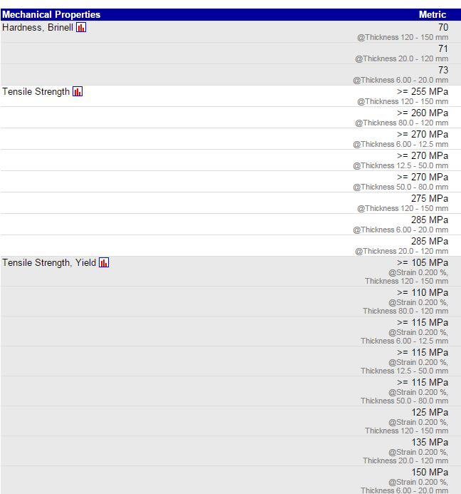
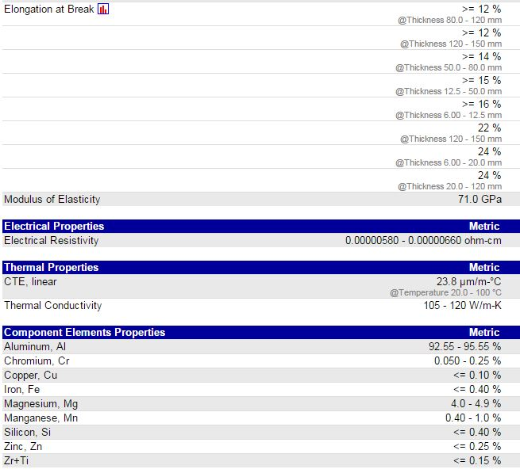

Ref : http://www.matweb.com/search/datasheettext.aspx?matguid=40ab94341f2c4b5b94d8abcc89d24a03
http://www.alupoint.de/Produkte/Aluminium/BlechePlattenBl%C3%B6cke/Pr%C3%A4zisionsplatten/ALPLAN.aspx
Constellium ALPLAN® 5083 Rolled Precision Aluminum Plate, Milled Both Sides
ALPLAN® 5083 precision plates exhibit good dimensional stability. Their low internal stresses reduces the effects of plate deformation during machining, thus saving on extra operations such as rough-milling, furnishing or re-work. Surface milling by the end user is not necessary. Applications include reference plates, control tools, jigs.

